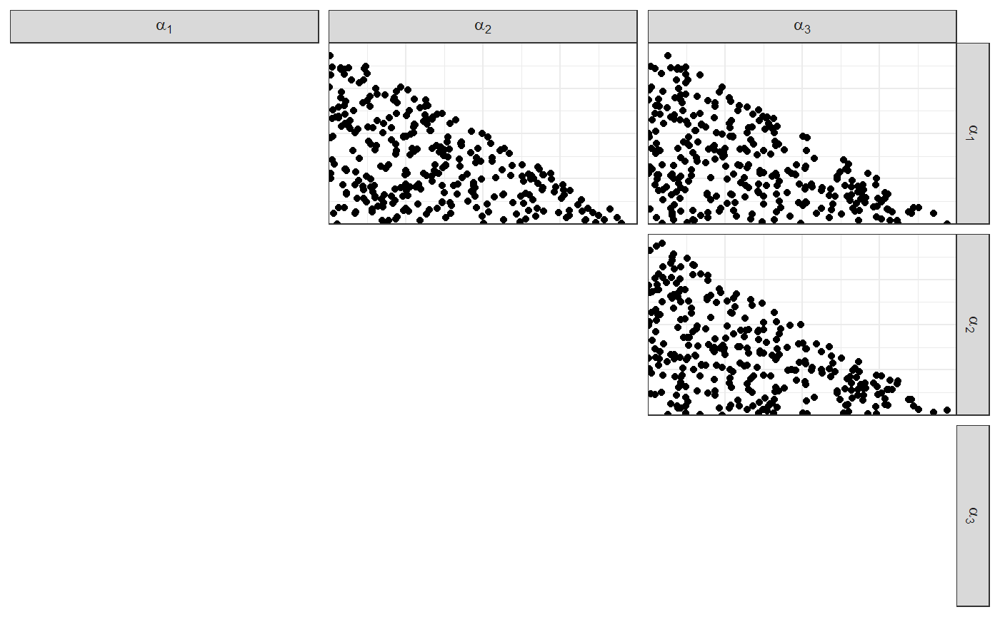

dirichletdirichlet.RmdA study is the set of parameters in a model, data generated from those parameters (population), and three sets of samples: the reference/questioned/background items.
This package implements the generation of selected studies.
This vignette describes the Dirichlet-Dirichlet model.
The population can be generated using fun_rdirichlet_population:
# Population parameters:
# Number of sources
n <- 10
# Number of items per source
m <- 20
# Number of observations per item
p <- 4
list_pop <- fun_rdirichlet_population(n, m, p)The output contains:
df_pop
df_sources and alpha
names_source
names_var
Notice that the hyperparameter is sampled, too (but it can be fixed).
head(list_pop$df_pop)
#> # A tibble: 6 x 5
#> source `x[1]` `x[2]` `x[3]` `x[4]`
#> <int> <dbl> <dbl> <dbl> <dbl>
#> 1 1 2.80e-23 0 8.47e- 50 1
#> 2 1 5.98e-19 0 1.55e-119 1
#> 3 1 1.34e-21 0 2.77e-124 1
#> 4 1 2.26e- 2 0 6.54e-100 0.977
#> 5 1 3.00e- 1 0 0. 0.700
#> 6 1 1.73e- 5 0 8.46e- 75 1.000
head(list_pop$df_sources)
#> # A tibble: 6 x 5
#> source `theta[1]` `theta[2]` `theta[3]` `theta[4]`
#> <int> <dbl> <dbl> <dbl> <dbl>
#> 1 1 0.0220 7.58e- 6 1.37e- 3 0.977
#> 2 2 0.549 2.38e- 78 1.41e- 7 0.451
#> 3 3 0.995 1.41e- 50 1.05e- 3 0.00400
#> 4 4 0.143 7.61e- 12 1.39e-13 0.857
#> 5 5 0.965 1.16e-112 2.60e- 2 0.00899
#> 6 6 0.293 1.62e- 65 9.66e- 2 0.610We assume that the Dirichlet hyperparameter (the level farther from the data) comes from the Uniform distribution on the (p-1)-Simplex.
In other words, we will sample the Dirichlet hyperparameter from the \(\text{Dirichlet}{(\boldsymbol{1})}\) distribution.
The shortcut function the package is fun_rdirichlet_hyperparameter:

Once the population is generated, the reference/questioned/background samples must be extracted.
This is generically done using make_dataset_splits:
k_ref <- 10
k_quest <- 5
list_samples <- make_dataset_splits(list_pop$df_pop, k_ref, k_quest)
names(list_samples)
#> [1] "idx_reference" "idx_questioned" "idx_background" "df_reference"
#> [5] "df_questioned" "df_background"head(list_samples$df_reference)
#> # A tibble: 6 x 5
#> source `x[1]` `x[2]` `x[3]` `x[4]`
#> <int> <dbl> <dbl> <dbl> <dbl>
#> 1 10 1 0 4.03e-131 1.21e-25
#> 2 10 1.000 0 1.62e- 26 3.33e- 4
#> 3 10 0.0383 0 1.34e-123 9.62e- 1
#> 4 10 1.000 0 2.55e- 44 4.76e- 4
#> 5 10 0.967 0 5.80e- 28 3.27e- 2
#> 6 10 0.410 0 3.48e- 12 5.90e- 1
head(list_samples$df_questioned)
#> # A tibble: 5 x 5
#> source `x[1]` `x[2]` `x[3]` `x[4]`
#> <int> <dbl> <dbl> <dbl> <dbl>
#> 1 4 5.49e- 2 0 0. 0.945
#> 2 5 10.00e- 1 0 2.27e-37 0.0000350
#> 3 14 3.58e- 4 0 3.99e-12 1.000
#> 4 15 6.90e-61 0 10.00e- 1 0.000000109
#> 5 17 9.13e- 1 0 1.23e- 9 0.0872
head(list_samples$df_background)
#> # A tibble: 6 x 5
#> source `x[1]` `x[2]` `x[3]` `x[4]`
#> <int> <dbl> <dbl> <dbl> <dbl>
#> 1 1 2.80e-23 0 8.47e- 50 1
#> 2 1 5.98e-19 0 1.55e-119 1
#> 3 1 1.34e-21 0 2.77e-124 1
#> 4 1 2.26e- 2 0 6.54e-100 0.977
#> 5 1 3.00e- 1 0 0. 0.700
#> 6 1 1.73e- 5 0 8.46e- 75 1.000